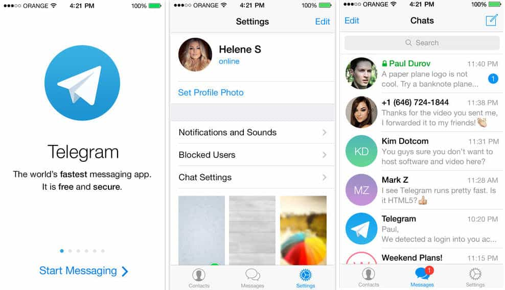

Daryush "Roosh" Valizadeh created ROK in October 2012. You can visit his blog at RooshV.com or follow him on Twitter and Facebook.


Two massive outrages against us in the past six months shows that the establishment does not want us to organize offline. We’re allowed to have a monitored corner of the internet to discuss most of what we want, but we cannot meet in public without the machine whirling into action to stop us. We therefore have to take our meetings underground and conceal them from the public. I will never again allow the enemy to get as close to us as they did during the weekend of the planned international meetups.
Men on RVF have been meeting for years. This was primarily done through the private messaging system where personal email addresses and phone numbers were exchanged. Because of the additional heat that is on us, and the fact that messages sent on the forum are not encrypted, I no longer advise you to share personal details on the forum, even through private messages. Instead, you need to set up these two means of communication:
1. Burner email address.
Sign up for an email address that you keep sandboxed away from your real identity. Here are some options for your burner email account:
Google your burner email every few months to ensure that it is not linked to you in any way.
2. Telegram app for mobile.
Telegram is essentially a secure Whatsapp that features encrypted “secret” chats that can’t be deciphered from the cloud. It also gives you a username that allows you to communicate with others without them knowing what your phone number is. Choose a username that is different from your RVF username or ROK commenting handle since friends who have your phone number will be able see your Telegram username, and make sure that all of your chats are using the secret feature to take advantage of full encryption. The app is available on Android, iPhone, and Windows.

When you want to meet someone from the forum, share your burner email or Telegram username and then arrange your meeting. Telegram has the additional benefit of allowing you to create private groups to arrange meetings of more than two people.
It’s also possible to meet someone through ROK comments. In that case, set your Disqus profile to public so that men can vet you through your posting history. When you want to meet someone, arrange it in a comment thread by sharing your burner email. I advise you not to post your Telegram username publicly. Be cautious of unsolicited messages from people you don’t know.
Arrange your meeting in a public venue of your city. Outside of international meetup day, we’ve never had a situation where someone acted as a poseur in order to meet with members. Nonetheless, you always have the right to get up and leave if the person you’re meeting acts shady by bringing someone without notifying you beforehand or spending too much time on their phone.
During your initial meeting, don’t ask overly specific personal questions. Examples…
Good question: “What kind of work do you do?”
Bad question: “What is the name of your company?”
Good question: “How old are you?”
Bad question: “What is your exact birth date?”
Good question: “What area of the city do you live in?”
Bad question: “What is your street address?”
Good question: “What is your first name?”
Bad question: “What is your last name… and your social security number?”
Good question: “What do you think of Kratom?”
Bad question: “What do you think of rape?”
Do not to take any pictures of the men you’re meeting with and do not share details of that meeting with outsiders.
Trust is not automatic or instant. It takes many hours to get to know someone else and understand what type of person they are. While it’s easy to fake a persona online, it’s exceedingly difficult to do so in real life. It will probably take you less than five minutes to spot any poseur that you happen to meet, especially since male feminists have gay mannerisms, gay speech cadence, gay style, and gay hair.
The gay face of a male feminist. He was arrested while protesting our New York meetup.
One reliable way to convey trust with someone you’re meeting is to have reputation points on the forum (or comment upvotes on ROK). It has yet to happen that a forum member with over 5 rep points turned out to be a feminist infiltrator. Therefore if you want to meet other men, first contribute genuine value on the forum or ROK.
If you have zero reps and a low post count, don’t be surprised if senior members decline to meet with you. What benefit do they have for meeting a complete stranger who has yet to contribute anything to the community? Personally, I wouldn’t take that chance. While you may be eager to meet other like-minded men, put in your dues first by spending at least three months building your reputation by sharing information that is difficult to fake by a poseur.
We are a counter-cultural movement. The establishment and its proxies (e.g. media organizations, Anonymous, universities, municipal governments, etc.) have done everything they could to shut me down and scare you away while linking our masculine philosophy to rape and evil. This is occurring because we’ve reached a point where our ideas are starting to hurt their agenda and narrative. Getting involved in our community may make you a target, especially if you ignore the precautions I’ve written above.
While I don’t anticipate future worldwide mob action against us, I can’t rule out an act of God that comes in the form of targeted hack attempts or government infiltration. It has never happened that men who got involved in a counter-cultural movement were not taking on risk, and we are no exception. Of course we can minimize that risk, but understand that the benefits of meeting men who share your “dangerous” beliefs comes with a downside of being seen as a thought criminal of the establishment. On the bright side, thousands of men have already accepted this risk, so you will not be alone.
The meetup outrage of February 2016 changes the protocol but not the mission. We will still organize and meet offline, but it will be invisible to the general public. From this point on, only men who are vetted by myself or someone I trust can lead tribes in their cities. These tribes will not be announced through the public like before and there will be no updated map showing their locations. You will have to know someone in order to enter or prove your alignment with our beliefs.
The establishment has shown that they can hurt us if our activities are public, so we’re going underground. We will walk among them, meet under their noses, and they will have absolutely no knowledge of our activities, which will continue to be legal like it always has been. They may have interrupted our plans in the short term, but our adaption to their attack methods will ensure success from this point on. The fight is just getting started.
This article was originally published on Roosh V.
Read Next: How To Incite Human Beings To Violence Through False Headlines